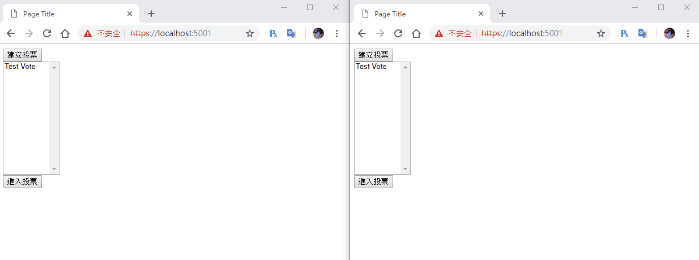

[鐵人賽Day20] 實作一個即時投票系統 (5) - 讀取建立的投票
文章目錄
今天就是即時投票系統最後一篇了，讓我們努力把它完成吧！
讀取投票資料
首先我們要把畫面改一下，一堆按鈕投票感覺很笨
投票畫面修改
我們這次不要一堆按鈕，改成把選項全塞進一個select元素中，在加2顆按鈕，一個投票一個反對票
<div id="voteRoom" style="display:none">
<div class="canvas">
<canvas id="myChart"></canvas>
</div>
<select id="voteSelList">
</select>
<br />
<button id="votePlus">投票</button>
<button id="voteMinus">反對票</button>
</div>
修改VoteModel
在Day17時，我們是把已經訂好的資料一個一個push進陣列裡，但是現在選項都是使用者自訂出來的，所以我們要修改成更好的方法才行，基本上原本的都不需要變動，我們只需要在Mode增加2個get用的屬性就行，屬性內容一個傳回List<string>，也就是所有選項的名稱List，另一個則是票數List，這樣就剛好符合Chart.js名稱和data各一個陣列，那要怎麼回傳一個List呢？我們只需foreach迴圈把它讀出來就行了。
public class VoteModel
{
public int id { get; set; }
public string voteName { get; set; }
public string creator { get; set; }
public DateTime startDate { get; set; }
public DateTime endDate { get; set; }
public Dictionary<string, int> voteSelect { get; set; }
public List<string> voteSelectNameList
{
get
{
List<string> list = new List<string>();
foreach (var item in voteSelect)
{
list.Add(item.Key);
}
return list;
}
}
public List<int> voteSelectCountList
{
get
{
List<int> list = new List<int>();
foreach (var item in voteSelect)
{
list.Add(item.Value);
}
return list;
}
}
}
進入投票頁面並獲得資料
這邊要寫在進入入投票房間時，所以要寫在進入投票這顆按鈕上，首先我們先把Chart.js的資料來原JSON清空
var chartData = {
type: 'bar',
data: {
labels: [] ,
datasets: [{
label: '',
data: [],
borderWidth: 1
}]
},
options: {
scales: {
yAxes: [{
ticks: {
beginAtZero: true
}
}]
}
}
}
進入投票頁面，先做切換頁面的動作，再取得投票資料，記得要把選擇的投票名稱也傳到GetVote裡
// 進入投票頁面
goVote.addEventListener('click', function () {
// 頁面切換
voteMenu.style.display = 'none';
voteRoom.style.display = '';
// 取得資料
connection.invoke("GetVote", selVote.value).catch(function (err) {
return console.error(err.toString());
});
})
修改原本的ReceiveVote，接到資料後，開始塞進資料來源chartData物件裡，再把選項填入voteSelList裡面
// 進入投票選單
connection.on("ReceiveVote", function (json) {
// 資料填入
chartData.data.datasets[0].label = json.voteName;
chartData.data.labels = json.voteSelectNameList;
chartData.data.datasets[0].data = json.voteSelectCountList;
// 清空選項
voteSelList.innerHTML = '';
// 填充選項
for (var i = 0; i < json.voteSelectNameList.length; i++) {
var voteSel = document.createElement('option');
voteSel.innerHTML = json.voteSelectNameList[i];
voteSel.value = json.voteSelectNameList[i];
voteSelList.appendChild(voteSel);
}
// 開始畫圖表
myChart = new Chart(ctx, chartData);
});
最後是投票事件，只要把投票名稱改成selVote的值還有選項改成voteSelList的值，還有圖表重繪的事件Day17已經寫好了，改都不用改XD
// 投票事件
votePlus.addEventListener('click', function(){
connection.invoke("AddVoteSelectCount", selVote.value, voteSelList.value).catch(function (err) {
return console.error(err.toString());
});
})
// 反對票事件
voteMinus.addEventListener('click', function(){
connection.invoke("SubVoteSelectCount", selVote.value, voteSelList.value).catch(function (err) {
return console.error(err.toString());
});
})
這樣就完成啦！！！
DEMO

投票系統就到這邊告一段落啦！明天又是新的實作，敬請期待XD